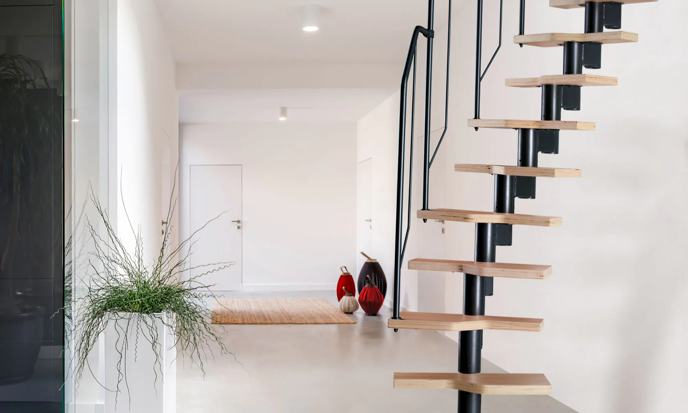

Kontrast
Fasadni i štukaturski radovi
Vukovar, HR
skakicgoran@gmail.com
092/180/9086
Usluge
Fasade
Završni gradjevinski radovi
Gletanje
Krečenje
Povoljni završni građevinski radovi
Fasadni i štukaturski radovi
Fasadni radovi obuhvaćaju sve aktivnosti koje se odnose na vanjski dio zgrade, odnosno fasadu. To uključuje pripremu površine, popravke, bojanje, žbukanje, postavljanje izolacije, postavljanje obloga i slično. Štukaturski radovi, s druge strane, odnose se na primjenu i obradu štuka na unutarnjim površinama zgrade. Štuka je materijal koji se koristi za oblaganje zidova i stropova kako bi se postigao glatki i ravni završni sloj. Štukaturski radovi uključuju pripremu površine, nanošenje štuka, izravnavanje i oblikovanje štuka, brušenje i brojne druge. Cilj štukaturskih radova je postizanje estetskog i funkcionalnog završnog sloja unutarnjih površina.
Galerija
